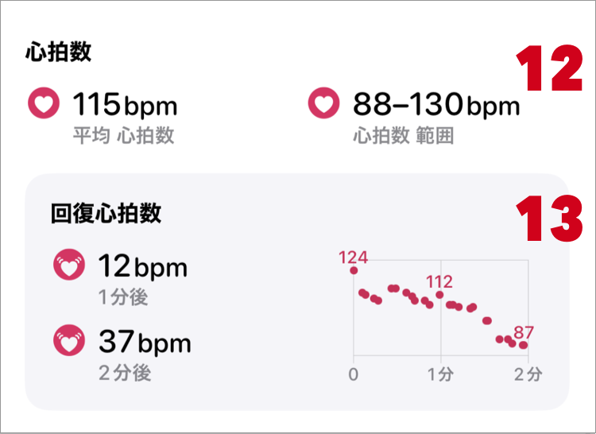

ヘルプ
ワークアウト詳細
- 1. 編集
- Zonesで登録されたワークアウトのみ表示されます。
- 2. 削除
-
Zonesで登録されたワークアウトのみ表示されます。
削除すると、データの復元はできません。ご注意ください。 -
他アプリで登録されたワークアウトは削除ができません。これはiOS(HealthKit)の制限になります。
登録したアプリ もしくは Appleのヘルスケアで削除してください。 - 3. シェア
- 4. ワークアウト日付
- ワークアウトを開始した時の日付が表示されます。
- 5. ワークアウト時間
- ワークアウト開始時刻 〜 ワークアウト終了時刻
- 6. 登録アプリ（ソース）
- 7. ワークアウト名
- カスタムワークアウトで名前を設定している場合、その名前が表示されます。
それ以外は、アクティビティ名が表示されます。 - 8. ルートマップ
- ルート位置情報が記録されていた場合、タブが表示されます。
ルートマップが表示されない場合

- 9. 運動時間
- ポーズ時間を除いたワークアウト時間です。
- 10. 合計アクティブカロリー
- ワークアウト中に消費したカロリーの合計です。
もし、値が大きく違う場合はデータの再収集をお試しください。 - 11. 合計距離
- ワークアウト中に移動した距離の合計です。
もし、値が大きく違う場合はデータの再収集をお試しください。 - 12. 速度
- 9.運動時間と、11.合計距離から算出した速度です。
ただし、以下の場合は計算方法が変わります。
水泳でラップが登録されている場合は、9.運動時間の代わりにラップの合計時間を利用します。
ダウンヒルスキー・スノーボードでセグメントが登録されている場合は、セグメント速度の平均を表示します。 - 13. 14. 平均、最大-最小 運動強度
- 心拍数と、心拍ゾーンより算出した運動強度です。
心拍数の記録がない場合には、-- になります。 - 15. 16. 平均、最大-最小 心拍数
- 心拍数の記録がない場合には、-- になります。
- 17. 回復心拍数
- 回復心拍数が記録されている場合に表示されます。
詳しくは回復心拍数についてを参照してください。
- 18. 区間情報
-
ワークアウトに区間情報が含まれていた場合に表示されます。
区間ごとに、距離や速度などの詳細情報をみることができます。

距離や速度を表示するためには、ワークアウトに距離データが紐付いている必要があります。
(Zonesによって測定されたトレーニングには距離データが添付されています。)
区間には以下の種類があります。 -
- a. スプリット
- km(mi)単位ごとの区間情報です。
11.合計距離 が1km(mile)以上のときに、表示します。
ワークアウトに距離が紐付けられていない場合は、スプリットの詳細は表示できません。
水泳でラップが登録されている場合は、表示されません。 - b. ラップ
- スプリットと似ていますが、ラップは測定時にワークアウトに記録された情報です。
プール水泳をしたとき時に登録され、泳ぎ方（スタイル）の情報を見ることができます。
Apple Document: HKWorkoutEventTypeLap - c. マーカー
-
マーカーは任意のタイミングの情報になります。
Zonesではマーカーの記録は対応していませんが、 Apple標準の「ワークアウト」アプリにてダブルタップで登録した情報は、マーカーとして表示されます。
Apple Document: HKWorkoutEventTypeMarker - d. セグメント
-
セグメントは、水泳やダウンヒルスキー、スノーボードの時などに登録されます。
Apple Document: HKWorkoutEventTypeSegment - e. アクティブ・ポーズ
- ポーズ(停止)をした場合に表示されます。
ポーズ中は「ポーズ」、ポーズ以外は「アクティブ」としてその区間を表示します。
Apple Document: HKWorkoutEventTypePause
Apple Document: HKWorkoutEventTypeResume
-
スプリット以外の情報は、ワークアウトに登録されている情報になります。
元データは、ヘルスケアアプリの、ワークアウトの詳細 > ワークアウトイベント にて確認できます。

- 19. 心拍数
-
ワークアウト中の、最小 - 最大心拍数を表示します。
グラフをタップすると、その地点での心拍数を表示します。
-
心拍数はiPhoneのヘルスケアから取得して表示します。
グラフ線は、心拍ゾーンの設定により色が変わります。 - 20. 速度
-
ワークアウトの平均の速度を表示します。
グラフをタップすると、その地点での速度を表示します。 -
速度のグラフは、距離データより作成しています。
ワークアウトに距離が紐付いている場合はその情報を、 紐付いていない場合はヘルスケアより取得して表示します。
- 21. アクティブ線
- グラフ下の線が引かれていない箇所は、ポーズ(停止)している区間になります。

- 22. ルートマップの線の色
-
この箇所をタップすると、ルートマップの線の色を以下に変えることができます。
- 心拍ゾーン
- 速度
- 高度（GPSの高度)
- 23. ルートマップのシェア